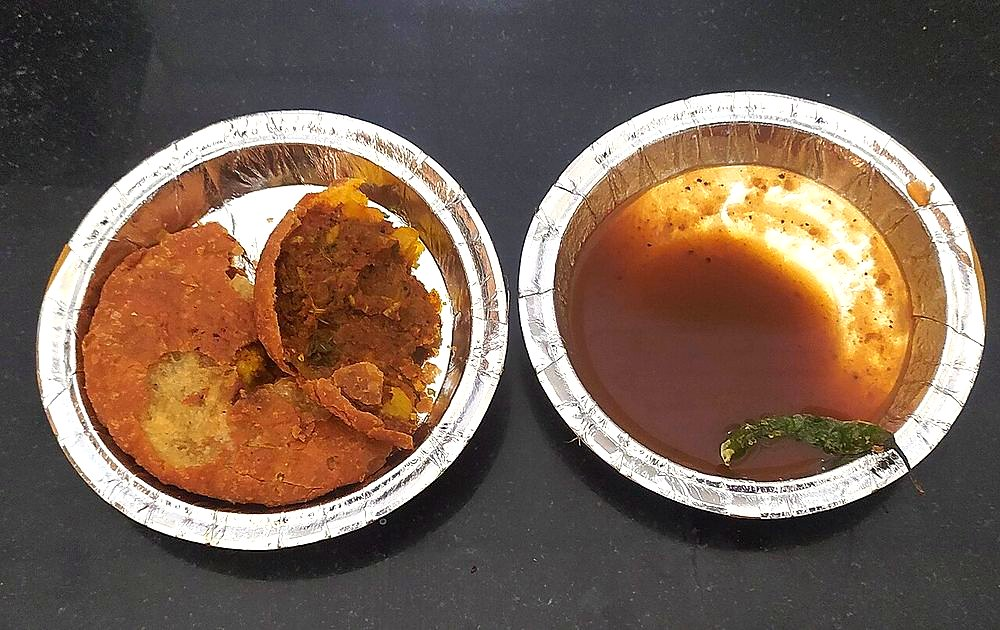

Allergens: none of the ten listed below
Checked against the ingredient list for milk, egg, fish, crustaceans, tree nuts, peanuts, sesame, mustard, soy and gluten. Nothing else is checked, and brands vary, so read the label on anything you have not bought before.
Ingredients
Quantities for 10.
- 150g block Tamarind
- 150g, pitted Dates
- 100g Jaggery
- 2 tsp, roasted Cumin Powder
- 1 tsp Fennel Powderoptional
- 1 tsp Dry Ginger Powder
- 1 tsp Chilli Powder
- 1.5 tsp Black Salt
- to taste Salt
Cookware
stovetop, blender
Before you start
- Dates do more than sweeten: they give the body that stops the chutney being watery. Jaggery alone gives a thin syrup.
- Make it looser than you want. It thickens considerably as it cools.
Method
- Soak the tamarind and dates in 600ml hot water for 30 minutes.
- Simmer the lot for 15 minutes until the dates collapse.
- Cool, then blend and pass through a sieve, pressing hard to get everything through.Sieving is what makes it glossy rather than fibrous.
- Return to the pan with the jaggery and cook 10 minutes until it coats a spoon.
- Stir in the roasted cumin, dry ginger, fennel, chilli powder, black salt and salt.
- Cool completely before bottling. It thickens as it stands.
Storage
Keeps 3 weeks refrigerated in a sterile jar and freezes for 6 months. If it sets too firm, loosen with a little hot water.
Nutrition Good estimate
| Per serving43 g | Per 100 g | |
|---|---|---|
| Calories | 123+ kcal | 288+ kcal |
| Protein | 1.0+ g | 2+ g |
| Carbohydrate | 31.6+ g | 74+ g |
| of which sugars | 25.8+ g | 60+ g |
| Fibre | 2.1+ g | 5+ g |
| Fat | 0.4+ g | 1+ g |
| of which saturated | 0.1+ g | 0+ g |
| of which unsaturated | 0.3+ g | 1+ g |
The + means ingredients given to taste rather than by weight are counted as zero, so the true figure is a little higher than shown. Worked out from the listed quantities; most of the ingredient list could be weighed. Ingredients given to taste rather than by weight are counted as zero, so the real figure is a little higher than this. The + says so. Some ingredients have no exact match in the nutrient database and use the nearest equivalent: black salt, jaggery. Estimated from raw ingredients using USDA FoodData Central. Cooking changes are not modelled, and added salt is excluded, so sodium is not given.
Written and checked against sources, not cooked in a test kitchen. Times, yields and keeping times are guides, and the allergen and nutrition figures are worked out from the ingredient list rather than measured. Use your own judgement, particularly on doneness and on anything you are storing or reheating. More in About.